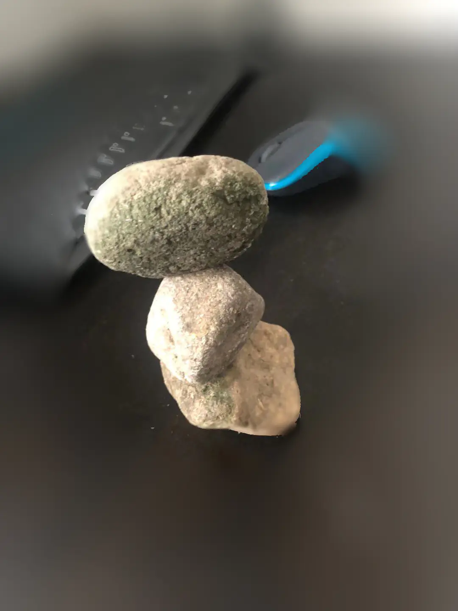

叠石头为什么是缓解焦虑最好的方法

叠石头能够缓解焦虑的理由:
1，叠石头并不容易，需要你集中注意力去做，当你集中注意力在另外一件事的时候，你就不会太忧虑了。 2，叠石头使你有明确的目标，不同于冥想，是靠内部自我的心灵力量。叠石头是在外部具体的目标（冥想也是一种很好的减轻焦虑的方式）， 3，叠石头让你手中有物，有一个具体的物体。可握可捏，可轻放。 4，叠石头成功了会让你有成功感 5，叠不起来也没关系，可能你意识到了解决问题的方法
如何选择叠石头的石头
- 石头不能太光滑，太光滑的难度太高
- 石头大小可以在3厘米-6厘米之间
- 石头的形状应选长方形或奇形，不建议选太圆太正的石头，这样重心点太容易找到，也就是太容易叠。
- 也不能选择太有棱角的石头，这样的石头因为可以通过棱角借力，也不主张
如何清洁叠石头的石头
- 首先把这些石头洗干净，洗去污泥、上面的小生物
- 然后放在太阳下晒半天，也可以用烤箱调到100度，加热5分钟。切记，不可以用微波炉，因为不知道这些石头是否中空，如果是中空的石头就会把你微波炉炸了，甚至引起人身伤害。
如何叠石头
- 找一个安静的地方，如书房，山溪
- 找一个平坦的桌面或平坦的大石头
- 试着通过不同组合就可以试着叠起石头了，有时二块并不能达到平衡，往往需要用第三块石头来达到平衡。可以准备5-6块石头，通过调换来叠石头。
- 叠石头并没有高下之分，一般以三块以上为叠石头，叠得越高心越静。但如果二块平衡运用得好，也是很好的叠石头作品呢
如何收藏叠石头
- 可以找一个布袋把石头收纳在其中，因为本身不是太光滑，石头产生磨损也是正常的。
- 也可以找一个盒子装起来，但请不要把例子在高处。